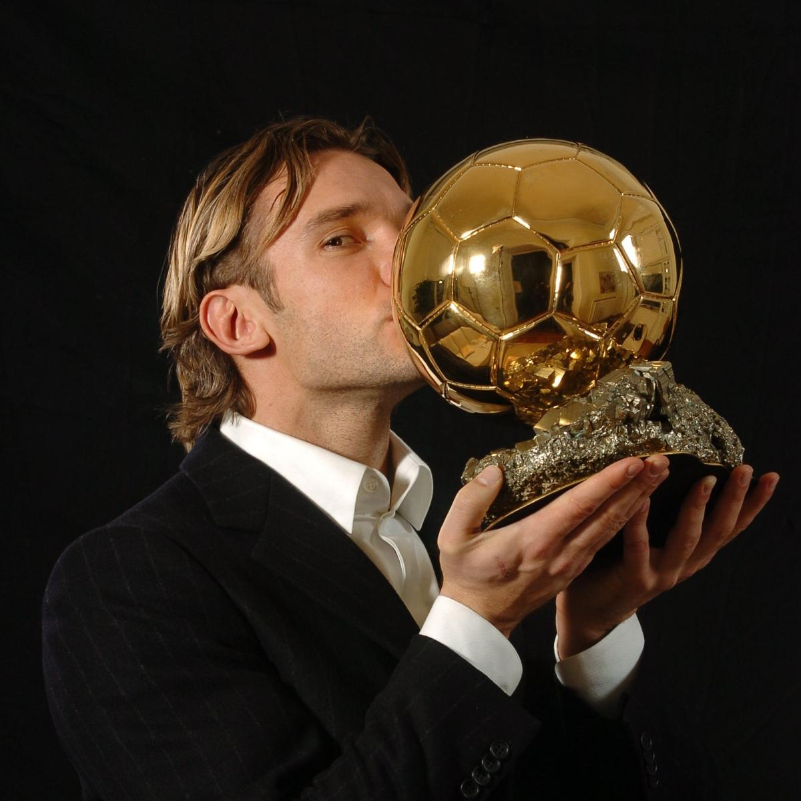
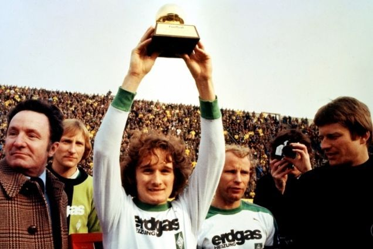
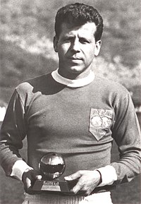

Vainqueurs des différentes éditions du ballon d'or !
La liste complète des lauréats du Ballon d'or, de 1956 à ce jour.
- Karim Benzema (2022)

- Lionnel Messi (2021)

- Lionnel Messi (2019)
- Luka Modric (2018)

- Cristiano Ronaldo (2017)

- Cristiano Ronaldo (2016)
- Lionnel Messi (2015)
- Cristiano Ronaldo (2014)
- Cristiano Ronaldo (2013)
- Lionnel Messi (2012)
- Lionnel Messi (2011)
- Lionnel Messi (2010)
- Lionnel Messi (2009)
- Cristiano Ronaldo (2008)
- Kaka (2007)
- Fabio Cannavaro (2006)
- Ronaldinho (2005)
- Andreï Chevtchenko (2004) 
- Pavel Nedved (2003)
- Ronaldo (2002)
- Michael Owen (2001)
- Luis Figo (2000)
- Rivaldo (1999)
- Zinedine Zidane (1998)
- Ronaldo (1997)
- Matthias Summer (1996)
- George Weah (1995)
- Hristo Stoichkov (1994)
- Roberto Baggio (1993)
- Marco Van Basten (1992)
- Jean-Pierre Papin (1991)
- Lothar Matthäus (1990)

- Marco Van Basten (1989)
- Marco Van Basten (1988)
- Ruud Gullit (1987)
- Igor Belanov (1986)
- Michel Platini (1985)
- Michel Platini (1984)
- Michel Platini (1983)
- Paolo Rossi (1982)
- Karl-Heinz Rummenigge (1981)
- Karl-Heinz Rummenigge (1980)
- Kevin Keegan (1979)
- Kevin Keegan (1978)
- Allan Simonsen (1977) 
- Franz Beckenbauer (1976)
- Oleg Blokhine (1975)
- Johan Cruyff (1974)
- Johan Cruyff (1973)
- Franz Beckenbauer (1972)
- Johan Cruyff (1971)
- Gerd Müller (1970)
- Gianni Rivera (1969)
- George Best (1968)
- Flórián Albert (1967)
- Bobby Charlton (1966)
- Eusébio (1965)
- Denis Law (1964)
- Lev Yachine (1963)
- Josef Masopust (1962) 
- Omar Sivori (1961)
- Luis Suarez Miramontes (1960)
- Alfredo Di Stefano (1959)
- Raymond Kopa (1958)
- Alfredo Di Stefano (1957)
- Stanley Matthews (1956)